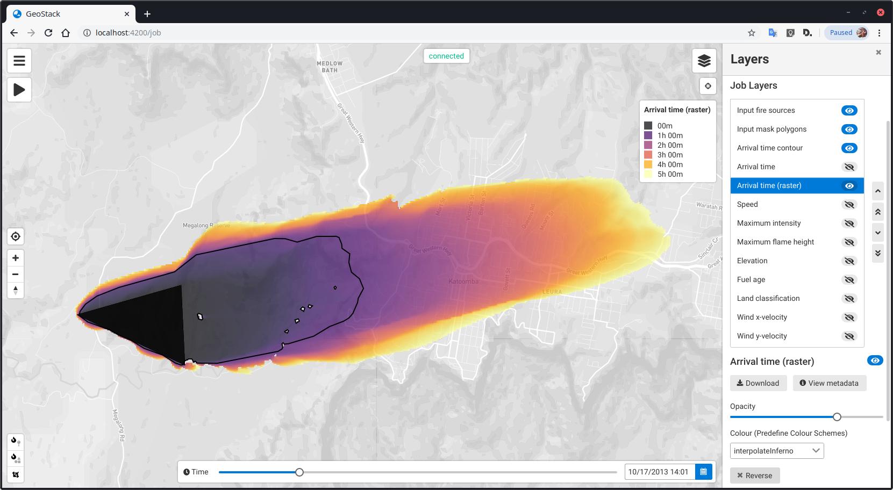

## Wrangling GeoTIFFs in the browser Nick Forbes-Smith <span style="font-weight: 100; font-size: 50%;">CSIRO's Data61 — RMIT University</span><br> <span style="font-weight: 100; font-size: 50%;">Hobart, Tasmania, Australia</span>
The first <span style="font-weight: 100">(and last)</span> FOSS4G talk on Geotiff.js! Probably not...
<ul style="font-size: 80%;"> <li class="fragment">FOSS4G 2019 - Discover huge raster files in the Browser with geotiff.js - Fabian Schindler</li> <li class="fragment">FOSS4G 2019 - Algorithm Walk-through: How to Visualize a Large GeoTIFF on Your Web Map - Daniel J. Dufour</li> <li class="fragment">FOSS4G 2019 - Interactive (EO) data visualization in the web - Lubomír Bucek & Daniel Santillan Pedrosa</li> <li class="fragment">FOSS4G 2019 - Breaking the curse of raster processing software-as-a-service - Iván Sánchez Ortega</li> <li class="fragment">FOSS4G 2018 - Wave Good-Bye to Buttonology: Satellite Imagery Analysis Made Easy with GeoTIFF.io - Daniel Dufour & Stephen Peyton</li> <li class="fragment">FOSS4G 2016 - geotiff.js and plotty.js - Visualizing Scientific Raster Data in the Browser - Fabian Schindler</li> <li class="fragment">...</li> <li class="fragment">...</li> </ul>
## I make - Web map apps w/ - distributed job processing back-ends <span style="font-weight: 100">for natural hazard modeling</span>
Wildfire 
Wildfire
Climate change risk
Climate change risk
Evacuation
Evacuation
Flood
Flood
## JS libraries <ul> <li>Angular, PrimeNG</li> <li>Mapbox GL JS, Terria/Cesium</li> <li>d3, <a>Plotty</a></li> <li><a>Geotiff.js</a>, <a>Georaster</a></li> <li><a>GPU.js</a>, <a>Geoblaze</a></li> </ul>
## Show GeoTIFF on Web‑map <span style="font-weight: 100; font-size: 50%;">Not going to talk about GeoTIFF</span> -------------- Usual method: WMS
### WMS 1. Load GeoTIFF into WMS Server (GeoServer) 2. Create style(s) 3. Publish 4. Client (mapbox, leaflet...) requests static image tiles
Okay, this is great -------------- We're done right?
...GeoTIFFs are being created on demand?
...interactive/dynamic styling? <!-- Dynamic styling is painful (and also makes caching impractical) --> <!-- Every change of style fetches new tiles from server -> every request is time and money! -->
...inspect raw values? <!-- No access to actual values - to inspect values have to use GetFeatureInfo WMS request -->
...run script on values?
...I have millions (or **BILLIONS!**) of geotiffs?
### So many requests to the server! Even if the browser already has the data
Forget that rubbish! ## We have GeoTIFF.js and WebGL! <span style="font-weight: 100; font-size: 50%;">I'm joking WMS is not rubbish</span>
Single layer
Colour scale <video data-autoplay src="video/show-colscale.webm"></video>
Set min/max and clamp <video data-autoplay src="video/show-minmax.webm"></video>
Blending layers with CSS
## Analyse Geotiff -------------- Usual method: WPS
### WPS 1. Write python script - Read in data via WCS - Crunch the numbers - Return result 2. Load scripts into WPS server (eg PyWPS) 3. Publish 4. Client executes WPS processes
Okay, this is great too
...I already have the data in the browser?!
...more requests to a server!
...100s of requests using the same data in realtime? <!-- Cache values between analysis -->
<span style="font-weight: 100">Ridiculous</span>
But we can also do this with ## JavaScript in the browser! <span style="font-weight: 100; font-size: 50%;">Wooo "edge computing"!</span>
Contouring <video data-autoplay src="video/analysis-contour.webm"></video>
Statistics <video data-autoplay src="video/analysis-stats.webm"></video>
<div style="margin-top: -40px;">Raster algebra</div > <br/> <video data-autoplay src="video/analysis-raster-algebra.webm"></video>
## What? How? -------------- - Fetch + decode data — <a>Geotiff.js</a> - Data wrapper — <a>Georaster</a> - Visualise — <a>Plotty</a> - Analyse — <a>Geoblaze</a>, <a>GPU.js, (d3)</a>
## Geotiff.js <!-- The star of the talk --> This does all the hard work! Pure JavaScript implementation of Geotiff: - Reads in file - HTTP range requests for subsets (bbox/band) - Decodes and decompresses
From <a>https://geotiffjs.github.io/geotiff.js/</a> ```js const response = await fetch(someUrl); const arrayBuffer = await response.arrayBuffer(); const tiff = await GeoTIFF.fromArrayBuffer(arrayBuffer); const image = await tiff.getImage(); // Get pixels const pixels = await image.readRasters(); // Get some properties const origin = image.getOrigin(); const resolution = image.getResolution(); const bbox = image.getBoundingBox(); ... ```
## Georaster > Wrapper around Georeferenced Rasters GeoTIFF, NetCDF, JPG, and PNG — provides a standard interface
From <a>https://github.com/GeoTIFF/georaster</a> ```js const parseGeoraster = require("georaster"); const response = await fetch(someUrl); const arrayBuffer = await response.arrayBuffer(); const georaster = await parseGeoraster(arrayBuffer) // Get pixels const pixels = georaster.values; // Get some properties const projection = georaster.projection; ... ```
## Plotty Colourise 2d raster using Canvas API and WebGL (with JS fallback) Set value domain, clamp, transform matrix, colorscale, raster/band algebra <!-- Show plotty NDVI (show set expression) - more RGB imagery -->
From <a>https://github.com/santilland/plotty</a> ```js plot = new plotty.plot({ canvas: document.getElementById("canvas"), data: somePixels, width: width, height: height, domain: [-1, 1], colorScale: 'viridis' }); plot.render(); ```
## Geoblaze - Basic statistics (min, max, mean, mode) - Band arithmetic and histogram generation No WebGL - all done on CPU.
From <a>https://docs.geoblaze.io/</a> ```js const mean = geoblaze.mean(georaster, geometry); const ndvi = geoblaze.bandArithmetic(georaster, '(c - b)/(c + b)'); const histogram = geoblaze.histogram(georaster, geometry, options); ```
## GPU.js Kernel functions - matrix algebra - Raster calculation - Interpolation - Reprojection... <span style="font-weight: 100; font-size: 50%;">and other crazy stuff</span>
From <a>https://github.com/gpujs/gpu.js</a> ```js import { GPU } from 'gpu.js'; const gpu = new GPU(); const multiplyMatrix = gpu.createKernel(function(a: number[][], b: number[][]) { let sum = 0; for (let i = 0; i < 512; i++) { sum += a[this.thread.y][i] * b[i][this.thread.x]; } return sum; }).setOutput([512, 512]); const c = multiplyMatrix(a, b) as number[][]; ```
## D3 - contouring / isobands - streamlines - arrows / barbs
From <a>https://github.com/d3/d3-contour</a> ```js const contours: MultiPolygon[] = d3.contours() .size([width, height]) .thresholds([0,1,2,3,...]) (pixelValues); ```
## Demo
## Limitations -------------- - File size - Projections - Client-side computation (GPU) - Service-oriented or API? - Client-side complexity - Other raster formats
## File size - GeoTIFF files can be large - Don't want to load entire file! - Can load COGs or through WCS <!-- WCS can query NetCDF (faster?) --> <!-- then getting file through WCS and then WebGL rendering faster and more interactive --> <!-- Smaller datasets generate more PNG than original dataset!? --> <!-- Size comparison between geotiff and png -->
## Projection Web mercator... urgh <!-- WCS, in browser reprojection? -->
## Client-side computation Decompress, render pixels to canvas... Analysing values... <!-- Drill through dimensions? - Might have to fetch single value from many files -->
## WMS is service oriented JS librares are for client-side use <span style="font-weight: 100; font-size: 50%;">Can be used with Node.js but Python libraries are better!</span>
## Client-side complexity Just want to show static imagery? Probably not worth it - WMS is supported by everything! <!-- mainly directed towards greyscale scientific datasets!!! -->
## Future -------------- - COG / Satelite imagery - NetCDF - Reprojection (WebGL?)
### Cloud Optimized GeoTIFF (COG) - Layout friendly for network consumption (HTTP range requests) - Can be tiled, compressed, and contain overview images Useful for accessing large raster datasets - eg Satelite/aerial imagery
### NetCDF - very fast query - if chunked properly - Can drill through many dimensions
### Reprojection <video data-autoplay src="video/extra-project.webm"></video>
## Other cool things
### 3D <iframe width="560" height="315" src="https://www.youtube.com/embed/qDazKJQBxuE?controls=0&start=42" frameborder="0" allow="accelerometer; autoplay; encrypted-media; gyroscope; picture-in-picture" allowfullscreen></iframe>
### Hillshade <video data-autoplay src="video/extra-hillshade.webm"></video>
### PNG raw 24 bit integer packed into RGB channels - see mapbox elevation tiles Hybrid WMS approach?
## I want this now! -------------- <a>geotiff.io/</a> - have a play with geotiffs in the browser and geoblaze <a href="https://github.com/GeoTIFF/georaster-layer-for-leaflet">georaster-layer-for-leaflet</a> <a href="https://github.com/GeoTIFF/ol-geotiff">ol-geotiff</a>
## Thanks -------------- Questions?